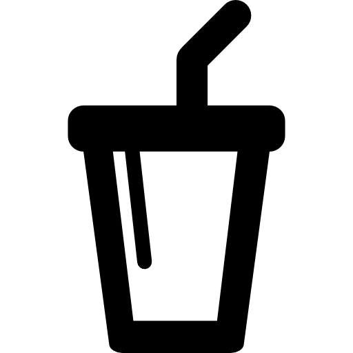

Padoca do Seu Clô
▪ Em nossa padaria,você poderá provar os melhores doces e salgados da região.Confira a lista de
alguns de nossos incriveis doces:
- Petit Gateau
- Bolo de diversos sabores
- Sonho
- Bomba de chocolate e creme
- Minitortas
- Carolina Recheada
- Pudim
- Rocambole
▪ Também trabalhamos com os melhores salgados,confira alguns de nossa especialidade:
- Pastel
- Coxinha
- Esfirra
- Sanduíche
- Pão de queijo
- Croissant
- Empada
▪ Pães? Também não falta,prezamos pela variedade de produtos,confira:
- Pão Francês
- Pão de Forma
- Pão Doce
- Pão de Coco
▪ São vários alimentos para consumir e se satisfazer,mas...e as bebidas?
Não se preocupe! Comercializamos bebidas para acompanhar o seu lanche,segue a lista:

- Suco Natural
- Café
- Refrigerante
- Caldo de Cana